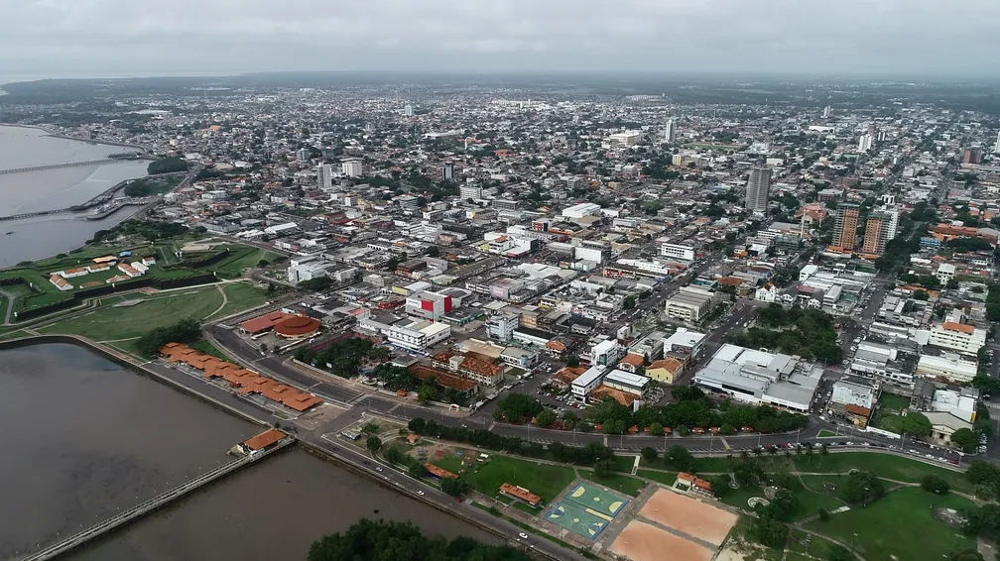

O Amapá é um estado da Região Norte do Brasil, com capital em Macapá. Localiza-se no extremo norte do país, fazendo fronteira com o Pará, a Guiana Francesa e o Oceano Atlântico. Possui cerca de 880 mil habitantes e é um dos estados mais preservados da Amazônia. Sua economia é baseada na extração mineral, produção de energia, serviços e administração pública. O Amapá se destaca pela diversidade cultural, com influências indígenas, africanas e europeias, e por abrigar o Marco Zero do Equador, um dos principais pontos turísticos do estado.
 Voltar